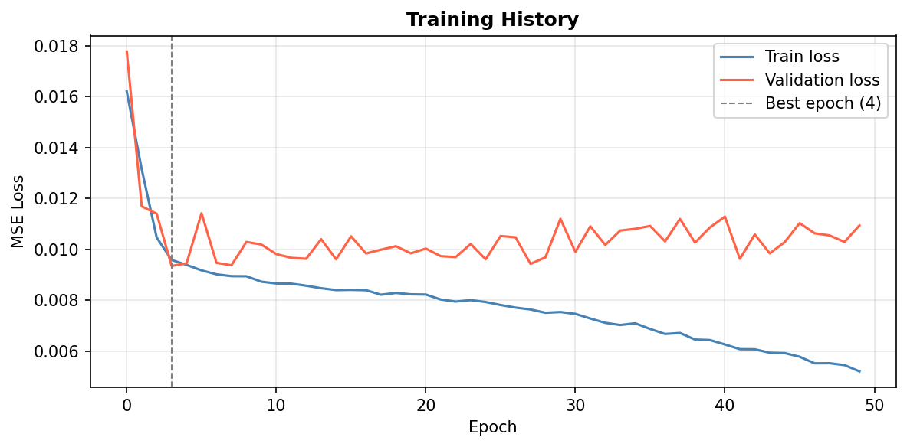
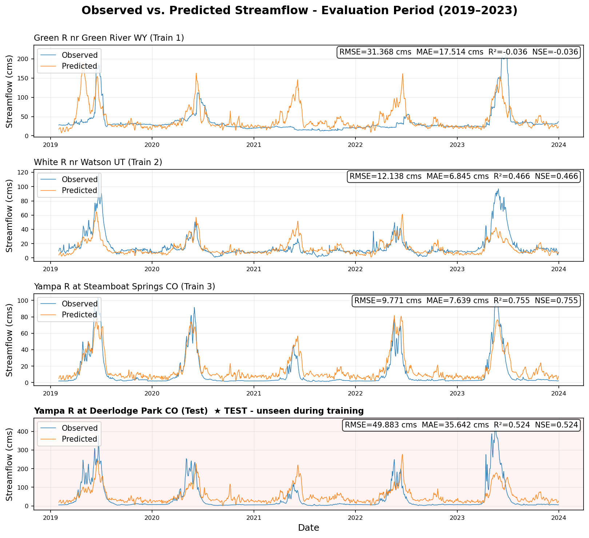
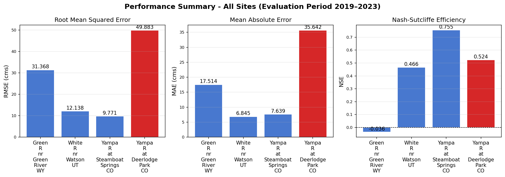
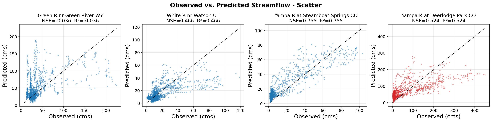

Why an LSTM
Physics-based rainfall-runoff models have to be parameterized and calibrated for each catchment, which makes them hard to scale across a region. LSTMs learn the relationships straight from observed records, and they fit rivers well because their gated memory holds information across long time lags. The LSTM cell state works a lot like watershed storage. It can carry snowpack information that keeps affecting streamflow weeks after the snow fell.
The training sites (Green River near Green River, WY; White River near Watson, UT; and Yampa River at Steamboat Springs, CO) are mostly unregulated, so the observed flow reflects the catchment's natural response to climate instead of reservoir release decisions the model could never learn.
Data and methods
Daily streamflow comes from USGS NWIS through the dataretrieval package. Daily climate inputs (precipitation, max temperature, and snow water equivalent) come from Daymet through pydaymet. Everything downloads automatically for 1990–2023, no manual steps. The model was tested on a site it never saw in training: the Yampa River at Deerlodge Park, CO, about 185 km downstream of Steamboat Springs with a much larger drainage area. I ran a manual hyperparameter search over lookback windows (30/90/365 days), hidden sizes (32/64), and learning rates. The winning setup is in Table 1.
| Data Split | Model Architecture | ||
|---|---|---|---|
| Training | 1990–2014 | LSTM layers | 1 |
| Validation | 2015–2018 | Hidden units | 64 |
| Test | 2019–2023 | Dropout | 0.0 |
| Training Configuration | Features | ||
| Optimizer | Adam | Lookback | 30 days |
| Learning rate | 1×10⁻³ | prcp_mm_day | precipitation |
| Batch size | 64 | tmax_degC | max temperature |
| Max epochs | 50 | swe_cm | snow water equiv. |
| Early stopping | 8 epochs | Scaling | MinMaxScaler |
| Loss | MSE | Metrics | RMSE, MAE, NSE |
Table 1. LSTM architecture, training configuration, data split, and input features.
Results
The model scored NSE 0.524 at Deerlodge Park, a site with no training data at all. That is real spatial generalization from upstream gauges to a downstream site with a bigger drainage area. Steamboat Springs, upstream on the same river, was the best training site (NSE 0.755), and that shared drainage probably drove the downstream transfer. The White River came in at 0.466. Seasonal timing was captured well at every site.




Where the model fails
The model's biggest weakness is underpredicting peak flows, and it comes straight from the MSE loss. High flows are rare, so the model gets the lowest total loss by staying near the mean and giving up on the extremes. The training history shows the same thing. Validation loss stopped improving at epoch 4, once the model had fit the low-flow regime that dominates the record.
The Green River scored NSE −0.036 even though it was a training site. That is worse than just predicting the mean. Its peaks are much larger than the other two training sites', and training on multiple sites without normalizing flow by drainage area pushes the model toward fitting the smaller sites at the big one's expense. Dropout had no effect anywhere in the search, so overfitting isn't the problem. The problem is how much information point-location climate features actually carry for a site with flow this complex.